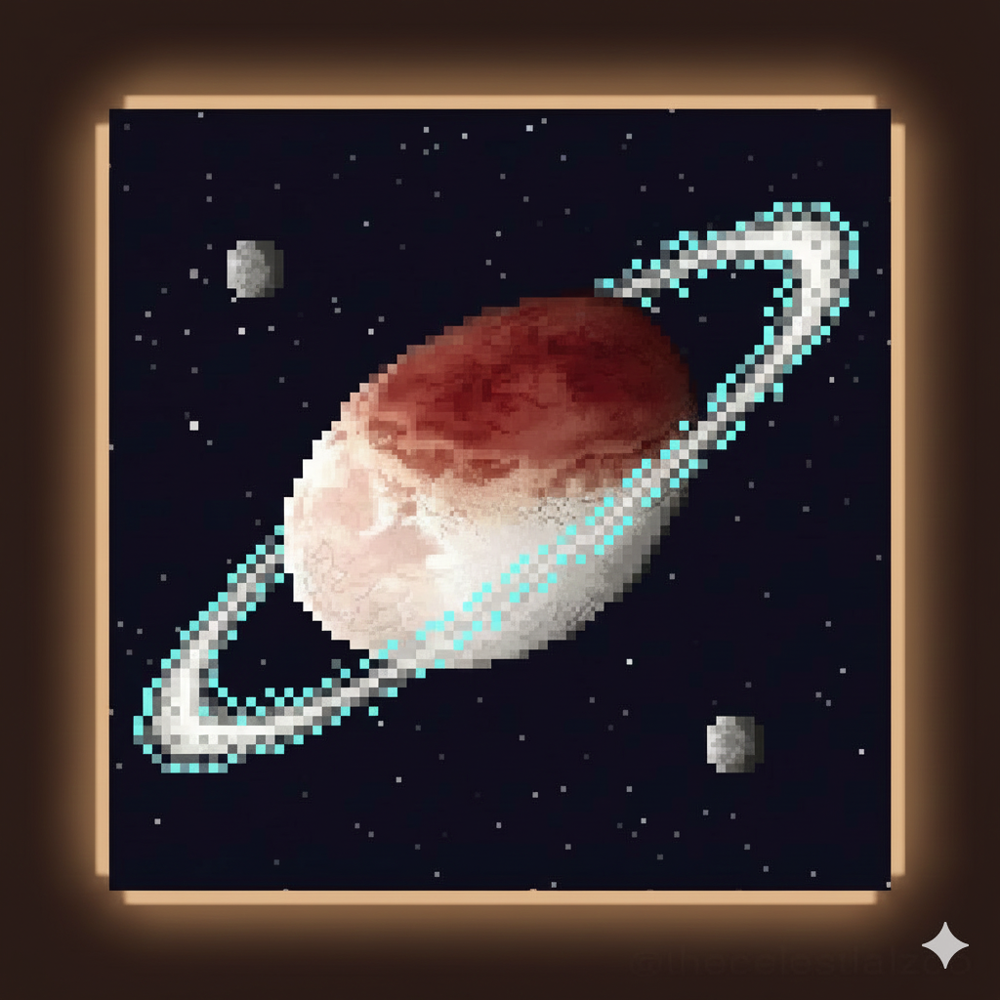

Your browser does not support HTML5 video.
Haumea
Dwarf Planet • Kuiper Belt

Overview
Haumea is an elongated, rapidly rotating dwarf planet in the Kuiper Belt.
Diameter:
1,632 km
Orbit:
284 years
Discovered:
2004